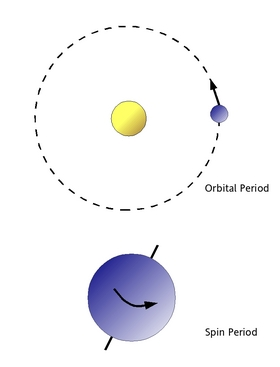
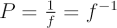
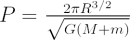

| In astronomy, the term period usually refers to how long an object takes to complete one cycle of revolution. In particular the orbital period of a star or planet is the time it takes to return to the same place in the orbit. The spin period of a star is the time it takes to rotate on its axis. |

The difference between orbital and spin period.
|
Alternately, a wave period is the time taken for one complete cycle of the wave to pass a reference point.
The period, P of an orbit, rotation, or wave, is just the inverse of the frequency, f:

The orbital period, P of two bodies of mass M and m that are gravitationally bound and separated by a distance R is:

Here G is Newton’s gravitational constant.